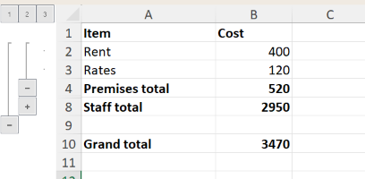

Hiding and grouping rows and columns
Rows and columns can be hidden, and grouped so that Excel shows an outline control (the + and - buttons beside the headings) that hides and shows them. These change the workbook, so open the file with mode="rw" (or start from XLSX.newxlsx). They can be read from any file.
Which rows and columns
Each function takes the rows or columns in any of these forms (see also Addressing cells and ranges):
XLSX.setColumnHidden(sheet, 3) # a column number
XLSX.setColumnHidden(sheet, 3:5) # a range of numbers
XLSX.setColumnHidden(sheet, [2, 6, 7]) # a vector of numbers
XLSX.setColumnHidden(sheet, "C:E") # column letters, or "C"
XLSX.setColumnHidden(sheet, "C1:E10") # cells: their columns are used
XLSX.setColumnHidden(sheet, "B:C,F") # several of these
XLSX.setColumnHidden(sheet, "Totals") # a defined name
XLSX.setRowHidden(sheet, "3:5") # rows: "3", "3:5", "A3:E5", ...
XLSX.setRowHidden(xf, "Sheet1!3:5") # with an XLSXFile, give the sheetRows and columns needn't hold any data.
Hiding
XLSX.setColumnHidden(sheet, "C:D")
XLSX.setRowHidden(sheet, 2:4)
XLSX.isColumnHidden(sheet, "C") # true
XLSX.isRowHidden(sheet, 5) # false
XLSX.setRowHidden(sheet, 2:4; hidden=false) # show them againA hidden column keeps its width, and a hidden row its height, for when they are shown again.
Grouping
XLSX.groupRows(sheet, 2:10)
XLSX.groupColumns(sheet, "B:D")Grouping rows that are already grouped makes a group within a group, one outline level deeper. Excel allows seven levels.
XLSX.groupRows(sheet, 2:10)
XLSX.groupRows(sheet, 4:6)
XLSX.getRowOutlineLevel(sheet, 3) # 1
XLSX.getRowOutlineLevel(sheet, 5) # 2Each group has a summary row, holding the button that hides and shows it. That is the row just below the group (the column just to its right), as in Excel, or above (to the left) if the sheet's outline settings say so.
Pass collapsed=true to show a group collapsed, with its rows hidden:
XLSX.groupRows(sheet, 12:20; collapsed=true)For example, a budget with its detail rows grouped under their totals, and both groups inside one that covers everything above the grand total:
XLSX.groupRows(sheet, 2:8) # level 1
XLSX.groupRows(sheet, 2:3) # level 2, shown
XLSX.groupRows(sheet, 5:7; collapsed=true) # level 2, collapsed
Each group's button is on its summary row: row 4 for rows 2–3, row 8 for rows 5–7, and row 10 for the outer group. The numbered buttons show every group down to that level.
XLSX.ungroupRows and XLSX.ungroupColumns move rows and columns out one level. Rows hidden by a collapsed group stay hidden, as in Excel: show them with setRowHidden(sheet, rows; hidden=false).
See also
- API: Sheet layout
- Related guides: Filtering, Inserting and deleting rows and columns